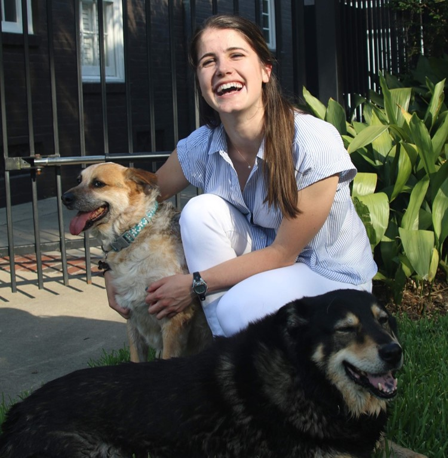
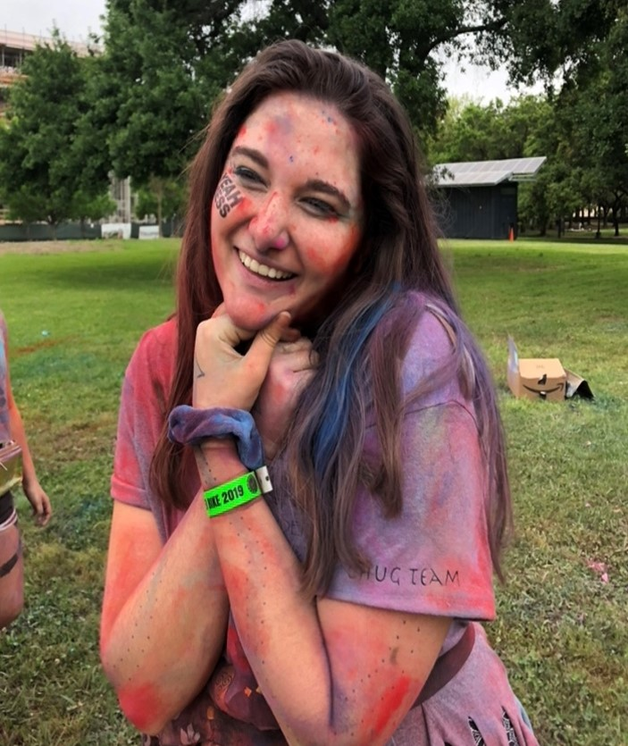
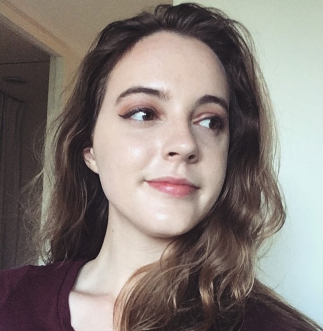

Class of 2021
 Lauren Biegel
Hello! My name is Lauren Biegel (pronounced Beagle). Wiess Social Policy Analysis major, class of 2021. Opening attorney, character witness, and unofficial mom of Rice Mock Trial's A team. I like my dogs more than I like most people.
Major: Social Policy Analysis
Star Sign: Pisces
We Love Mock
We Love Mock
 Loryn Hudson
What do Jenna Marbles, the word “UNHhhh”, and tv shows about random people looking for love all have in common? If you answered Loryn Hudson, then you’re a winner, baby! This Wiess junior has been rocking the mock courtroom with her charisma, uniqueness, nerve, and talent since high school both as an attorney and a witness (and even sometimes as a judge). Outside of the Law, Loryn continues to shine as a unit leader in Camp Kesem, so you know she can handle plenty of childish antics (an important skill on the Rice mock trial team). Around campus, she does occasionally make an on-stage appearance at a Rice theatre production, but you’ll most likely catch her backstage making sure everyone looks their best. She’s our resident costumer and makes sure no one is stepping into the stage (or the courtroom) in an outfit that’s just all kinds of wrong. From a completely unbiased opinion of a teammate (thank u soph I love u -L)our team is blessed to have someone like Loryn Hudson.
Major: Linguistics and Psychology
Star Sign: Capricorn
We Love Mock
 Amelia Lindell
Amelia is a transfer student/Rhodes College escapee of indeterminate grade, but if you must classify her, she’ll go with junior. (And when the sophomore class events have free food, she’s a sophomore, and when the freshman class events have... you get the picture.) When not creating absurd mock trial characters, Amelia can be found wearing hideous floral prints and making people who don’t care about hockey listen to her talk about hockey.
Major: Political Science
Star Sign: Libra
We Love Mock